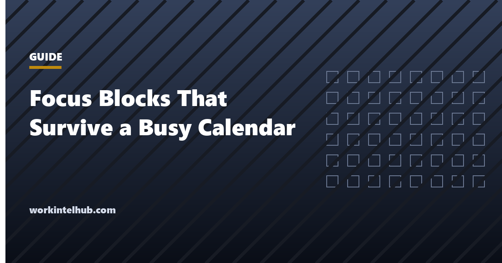

How to Set Focus Blocks That Survive a Busy Calendar

A focus block is a period of calendar time reserved for one named piece of work, where interruption is the exception rather than the default. For teams doing knowledge work, it is the main defense against a week made entirely of other people's requests. Most focus blocks die for one reason, and it is not weak willpower: canceling them costs nothing.
Everything in this guide is about adding a cost. Not a punishment, just a small amount of friction, so that moving the block requires the same thought as moving a client call. That single change does more than any calendar trick we know.
Why Focus Blocks Are the First Thing to Get Canceled
A calendar entry survives in proportion to what it costs to move. A client call is expensive, because someone outside the building has to be told. A team meeting is expensive, because six people have to re-agree on a time. A block labeled "focus" costs zero. Nobody is informed, nobody is inconvenienced, and no promise is broken.
Three properties make an entry expensive: another person expecting it, a named output attached to it, and a visible consequence when it slips. A block with none of them is a preference. A block with two of them is a commitment, and commitments hold through a bad week. That framing also connects focus time to the wider question of what a team is actually producing, which our complete guide to employee productivity works through in more depth.
| Calendar entry | Who notices if it moves | Cost to cancel |
|---|---|---|
| Customer call | Someone outside the company | High |
| Six-person meeting | Five colleagues | High |
| One-to-one | Your manager or report | Medium |
| Block named "focus" | Nobody | Zero |
| Block named "draft Q3 capacity report, due Friday" | Whoever is waiting on Friday | Medium |
How Long Should a Focus Block Be, and Where Should It Sit?
Ninety minutes, placed in the quietest part of your team's day, is the setting that works for most people. Ninety is long enough to load a real problem and produce something, and short enough that a normal week can absorb it. Sixty works when the task is already well defined. Below 45 minutes, most of the block goes on setup rather than progress.
Placement matters more than length, and there is data on where the traffic sits. Microsoft's 2025 Work Trend Index, built on anonymized Microsoft 365 telemetry plus a survey of 31,000 knowledge workers across 31 markets, found that 50% of meetings fall between 9 to 11 am and 1 to 3 pm. Those two windows are where your block will lose. The first hour of the day and the stretch after 3 pm are usually the defensible ground.
Frequency is where people overreach. Three protected blocks a week beat six that get moved, because every moved block teaches your colleagues, and you, that the entry is negotiable. If you want a wider set of methods to fill those blocks well, our roundup of time management techniques for focused work covers what to actually do once the time is yours.
The cancellation cost rule
Before you create a block, answer one question: who will notice if it disappears? If the honest answer is nobody, it will disappear. Attach a name (the deliverable), a person (someone expecting it), or a date (when the output is due). One of the three is the minimum. Two is what makes a block hold through a genuinely bad week.
How to Set Up Focus Blocks in Seven Steps
Set the whole thing up once, deliberately, rather than creating blocks ad hoc whenever you feel behind. The sequence below takes about twenty minutes and then runs on repeat.
- List the work that genuinely needs concentration. Usually two or three things: the strategy document, the analysis, the piece of building nobody else can do. Everything else is fine in fragments.
- Find your team's quiet window. Look back at four weeks of your calendar and identify the hours that were least often booked over. That is your slot, whatever your chronotype says.
- Book three blocks of 90 minutes. Same days, same times, every week. A repeating pattern becomes part of how colleagues picture your week. A block that wanders never does.
- Name each block after the output, not the activity. "Draft Q3 capacity report" holds. "Focus time" does not, because nobody can tell what breaks when it is canceled.
- Tell one person what each block is for. A manager, a peer, whoever will ask about the output. This is the cheapest way in existence to add a cost to canceling.
- Set the interruption rule in advance. Decide what counts as a real emergency and say it out loud to your team: customer down, deadline today, someone blocked. Everything else waits for the batch.
- Book a 15 minute buffer after each block. Without it, the block runs into the next meeting, you finish late, and you start associating focus time with being behind.
How to Defend a Focus Block Against Ad Hoc Meetings
The interruption that kills a focus block usually never appears on your calendar at all. Microsoft's 2025 Work Trend Index found that 57% of meetings are ad hoc, called without a calendar invite: a chat message that becomes a call, a huddle that pulls in four people, a "quick sync" that runs forty minutes. You cannot decline an invitation that was never sent, so the rule has to exist before the interruption does.
Three defenses work in practice. State a status convention your team agrees to read, so a busy marker means something rather than decorating the sidebar. Give people somewhere else to put the request, which usually means a channel or a shared document you promise to read at a fixed time. And answer the pull with a time rather than a refusal: "I can look at 3:15" ends the exchange in one message, while silence invites a second ping.
If you are not sure which interruptions are actually costing you, measure before you legislate. A week of honest observation tends to show that two or three recurring patterns cause most of the damage, and our walkthrough on running a productivity audit in one week gives you a structure for collecting that without turning it into surveillance.
Why Protecting Focus Time Is a Team Agreement
Focus blocks fail as a personal habit and succeed as a shared rule. The reason is plain: you do not control who writes to your calendar. If four colleagues can each drop a meeting on top of your block and none of them knows it is protected, your discipline is irrelevant. The agreement has to live between people, not inside one head.
What the agreement needs to say
Keep it to three points. First, which windows are protected and for whom. Second, what counts as an override, defined by consequence rather than by seniority. Third, what happens when someone overrides: they propose the replacement slot in the same message. That third point does most of the work, because it moves the effort onto the person creating the disruption.
When a meeting genuinely has to take the block
Sometimes the meeting really does win, and pretending otherwise makes the whole system look rigid. Our rule: never cancel a block, only move it, and move it in the same action as accepting the meeting. Reschedule inside the same week, before you reply. If no slot is left that week, you have not found a scheduling problem. You have found an overloaded week, and that is worth saying to your manager plainly.
How managers protect their team's blocks
Managers set the real rule through their own booking behavior, not through the policy they announce. Tell the team that Tuesday mornings are protected and then book a Tuesday morning sync, and the announcement is dead. The calendar is what people believe. Everything here assumes you are willing to be constrained by the same rule you wrote.
Watch the edges of the day, too. Microsoft reported that meetings after 8 pm rose 16% year over year, which is what a protected middle of the day looks like when the work was never reduced, just displaced. If blocks are only holding because evenings absorbed the overflow, the team is not better off. That is a capacity conversation, and our guide on reporting team capacity to leadership covers how to make it land.
One honest limit. For support, on-call, and other roles whose job is to answer incoming work, protected blocks only exist if someone else covers the queue. Rotating cover is the fix. Telling an interrupt-driven team to protect their mornings without a coverage plan just moves the guilt onto them.
How to Recover When the Week Collapses Anyway
When a week goes badly, protect one block rather than trying to rebuild all of them. The instinct after a lost week is to re-scatter blocks across whatever days remain, which produces short fragments in bad slots and a second failed week. Pick the single most important output, give it one 90 minute block, and let the rest go on purpose.
A worked example. A team lead loses three of four blocks to an incident on Tuesday. The recovery is not four blocks crammed into Thursday and Friday. It is one 90 minute block on Thursday morning for the document with a real deadline, plus a plain note to their manager saying two other pieces of work moved by a week. The second half of that matters as much as the first.
What if it keeps happening? Treat it as data rather than as a personal failure. Two or three consecutive weeks where no block held is a workload or staffing signal, and repeated collapse tends to arrive alongside the signs of employee burnout hiding in workload data. No calendar technique absorbs a permanent overload. It only helps you notice one sooner.
Key takeaways
- Focus blocks get canceled because canceling is free. Add a cost: a named output, a person expecting it, or a due date.
- Ninety minutes, three times a week, outside the two windows where half of all meetings land, beats an ambitious pattern you cannot hold.
- Most interruptions are ad hoc, so the interruption rule has to be agreed before the interruption happens.
- Never cancel a block, only move it, and move it in the same action as accepting the meeting that displaced it.
- If blocks fail for several weeks running, the problem is workload, not scheduling, and no calendar fix will reach it.
Frequently asked questions
What is a focus block?
A focus block is a period of calendar time reserved for one named piece of work, with interruption treated as an exception rather than the default. It differs from a generic busy marker because it names the output, which is what makes it possible to tell afterward whether the block worked.
How long should a focus block be?
Ninety minutes suits most knowledge work: long enough to load a problem and produce something, short enough to survive a normal week. Two hours works for people with quiet calendars. Anything under 45 minutes usually goes on setup rather than progress.
How many focus blocks should I schedule each week?
Start with three and protect all three. Most people schedule six, lose four, and conclude that focus blocks do not work. Once three hold for a month, add a fourth. A smaller number you actually keep beats a full calendar of blocks you move.
What time of day is best for a focus block?
Put it in the part of the day when your team schedules the fewest meetings. Microsoft found that half of all meetings land between 9 and 11 am and between 1 and 3 pm, so the edges of the day are usually the safest ground. The aim is the quietest window, not the theoretically most alert one.
How do I protect a focus block from ad hoc meetings?
Set the rule before the interruption arrives, because you cannot decline an invitation that never existed. Microsoft reported that 57% of meetings are ad hoc, called without a calendar invite. Agree with your team what counts as a real emergency, and give people a written place to put everything else.
Should I decline meetings that clash with a focus block?
Decline with an alternative rather than declining flat. Offer two other times in the same reply so the organizer has somewhere to go. A refusal with no path forward gets overridden, while a refusal that solves the organizer's problem usually holds.
How can a manager protect focus time for the team?
Make it structural rather than individual. Set one shared no-meeting window, move status updates to written form, and stop scheduling over blocks yourself. Managers set the real rule through their own booking behavior, not through the policy they announce, so the calendar is what the team ends up believing.
What do I do when a meeting genuinely has to take the block?
Move the block before you accept the meeting, in the same action. A block only disappears when it is canceled without a replacement. Reschedule it inside the same week, and if there is no slot left, that is the signal that the week is overloaded.
Do focus blocks work for support or on-call roles?
Only with coverage. If you are the person answering incoming requests, a block is a promise you cannot keep alone. Rotate cover so one person holds the queue while another gets the block, or accept shorter 45 minute windows between shifts.
Why do my focus blocks keep getting canceled?
Because canceling costs nothing. A block that only you know about, with no named output and no consequence for moving it, is the softest item on the calendar. Add a cost by naming the deliverable and telling one other person what it is.